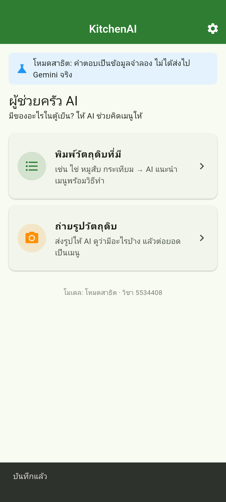
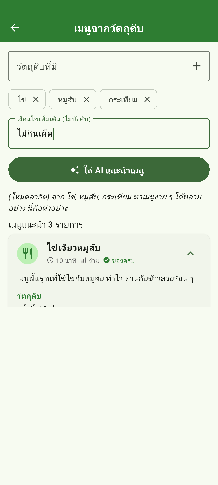
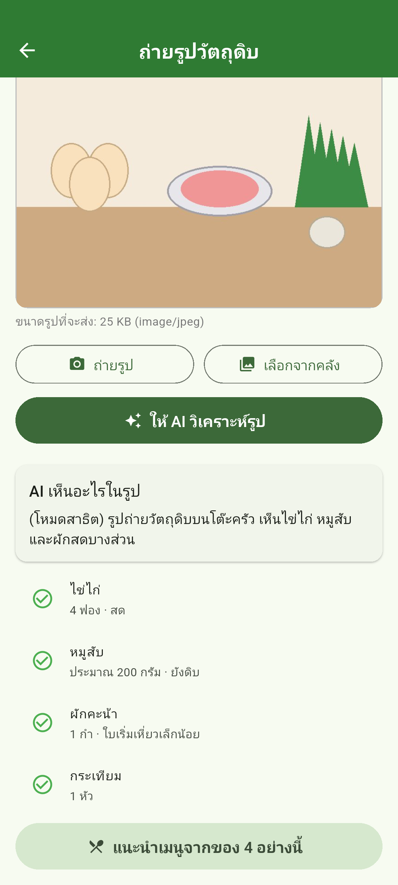
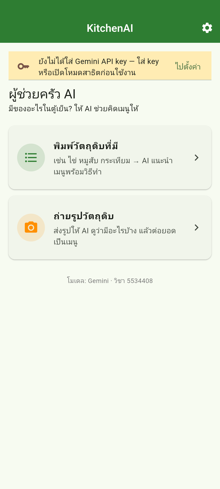
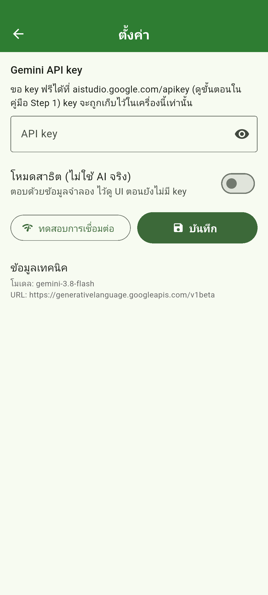
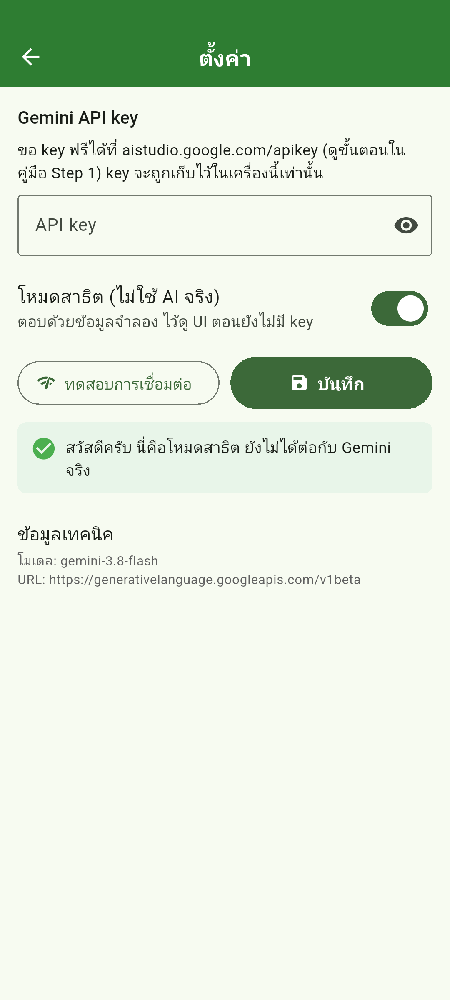
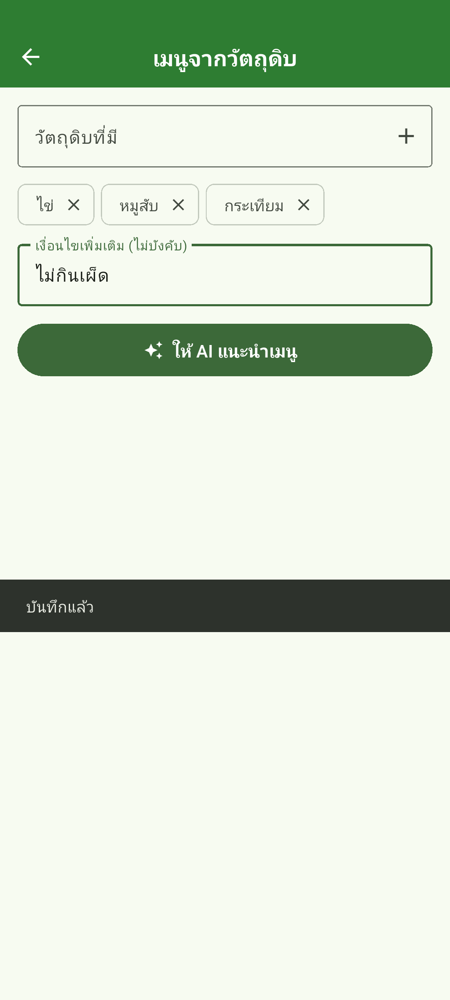
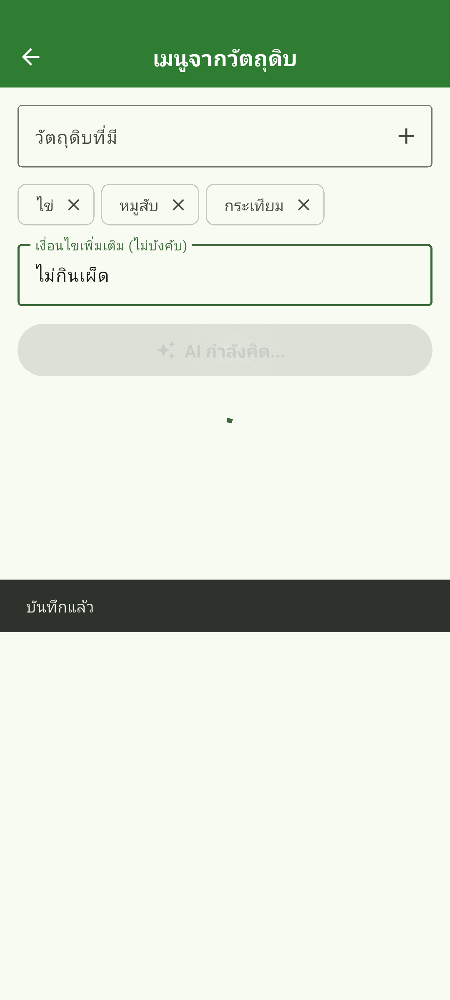
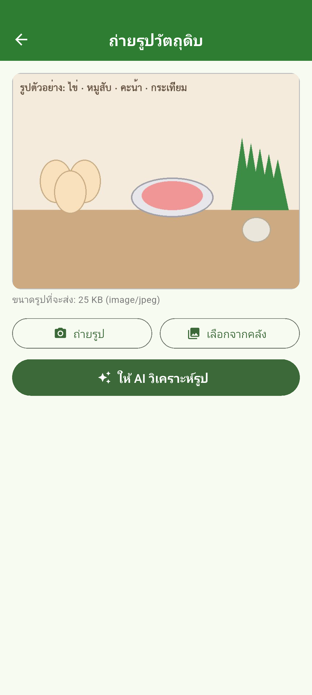
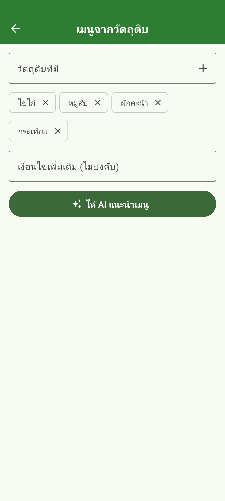

KitchenAI เป็นแอปมือถือเล็ก ๆ ที่ส่งคำถามไปให้ AI (Google Gemini) แล้วเอาคำตอบมาแสดงเป็นหน้าจอสวย ๆ มี 2 ฟีเจอร์:
| ฟีเจอร์ | ผู้ใช้ทำอะไร | AI ทำอะไร | เทคนิค |
|---|---|---|---|
| เมนูจากวัตถุดิบ | พิมพ์ของที่มี เช่น ไข่ หมูสับ กระเทียม | คิดเมนู 3 อย่าง บอกวัตถุดิบ ของที่ต้องซื้อเพิ่ม วิธีทำทีละขั้น | HTTP POST · JSON · prompt · บังคับ AI ตอบเป็น JSON |
| ถ่ายรูปวัตถุดิบ | ถ่ายรูปของในตู้เย็น | บอกว่าเห็นอะไร ปริมาณเท่าไร แล้วส่งต่อไปคิดเมนู | image_picker · base64 · ส่งรูป+ข้อความพร้อมกัน (multimodal) |



| คำ | ความหมายแบบบ้าน ๆ |
|---|---|
| LLM / โมเดล | โปรแกรม AI ที่รับข้อความ (และรูป) แล้วเขียนข้อความตอบ เช่น Gemini, GPT, Claude — เราไม่ได้รันมันเอง แต่เรียกผ่านอินเทอร์เน็ต |
| API | ช่องทางให้โปรแกรมคุยกับโปรแกรม — ของ Gemini คือ URL ที่รับ JSON แล้วตอบ JSON เหมือน PHP API ใน LabStock |
| API key | รหัสประจำตัวที่แนบไปทุกคำขอ บอกว่าเป็นเรา และนับโควตาของเรา |
| prompt | ข้อความที่เราส่งไปถาม/สั่ง AI · system instruction = prompt พิเศษที่บอกบทบาทและกติกา ใช้กับทุกคำถาม |
| token | หน่วยนับความยาวข้อความที่ AI ใช้ (คำไทย 1 คำ ≈ 1–3 token) โควตาฟรีนับเป็น token และคำขอต่อนาที/วัน |
| temperature | ตัวเลข 0–2 ควบคุมความสุ่ม: ต่ำ = ตอบเหมือนเดิมทุกครั้ง · สูง = หลากหลาย/สร้างสรรค์ |
| JSON schema | แบบฟอร์มบอกโครงสร้าง JSON ที่ต้องการ ส่งไปให้ AI กรอกให้ตรง จะได้แปลงเป็น object ใน Dart ได้ |
| multimodal | ส่งได้มากกว่าข้อความ — แล็บนี้ส่งรูปภาพไปพร้อมคำถาม |
| base64 | วิธีเขียนไฟล์ไบนารี (รูป) เป็นตัวอักษร เพื่อยัดลงใน JSON ได้ |
flutter doctor| Step | ประเภท | หัวข้อ | ทำเสร็จแล้วจะได้อะไร | นาที |
|---|---|---|---|---|
| 1 | อ่าน+ทำตาม | ขอ Gemini API key (ฟรี) และทดลองยิงคำขอแรก | มี API key ของตัวเอง และเห็นคำตอบจาก Gemini บนหน้าจอด้วย curl ก่อนเขียนแอป | 25 |
| 2 | อ่าน+ทำตาม | โหลดโค้ดเริ่มต้น เปิดใน Android Studio และรันครั้งแรก | แอปรันบนอีมูเลเตอร์ได้ เห็นทุกหน้าในโหมดสาธิต และรู้ว่าเทสต์ไหนยัง fail (คือสิ่งที่ต้องทำ) | 25 |
| 3 | อ่าน+ทำตาม | ทัวร์โค้ดที่ให้มา: ข้อมูลไหลจากหน้าจอไปถึง Gemini อย่างไร | วาดภาพในหัวได้ว่าแต่ละไฟล์ทำหน้าที่อะไร และจุดที่ต้องเขียนเองอยู่ตรงไหนของเส้นทาง | 30 |
| 4 | อ่าน+ทำตาม | เข้าใจ Gemini API: JSON ที่ส่งไป และ JSON ที่ได้กลับมา | อ่าน/เขียน request และ response ของ generateContent ได้ทุกช่อง ก่อนลงมือเขียนโค้ด | 25 |
| 5 | ทำเอง | เขียน GeminiClient: ส่งคำขอและแกะคำตอบ | generate() ยิง HTTP ไป Gemini ได้จริง · extractText() แกะข้อความได้ · เทสต์ 6 ข้อผ่าน · ปุ่ม "ทดสอบการเชื่อมต่อ" ได้คำตอบจาก Gemini จริง | 50 |
| 6 | ทำเอง | หน้า "เมนูจากวัตถุดิบ": prompt, JSON schema และการแสดงผล | พิมพ์วัตถุดิบ → กดปุ่ม → ได้การ์ดเมนู 3 รายการจาก Gemini จริง พร้อมวัตถุดิบ ของที่ต้องซื้อ และวิธีทำ | 45 |
| 7 | ทำเอง | หน้า "ถ่ายรูปวัตถุดิบ": ส่งรูปให้ AI ดู | ถ่าย/เลือกรูป → AI บอกว่าเห็นอะไร → กดปุ่มส่งต่อไปขอเมนูจากของในรูป | 45 |
| 8 | อ่าน+ทำตาม | ตรวจสอบรอบสุดท้าย แก้ปัญหา และสร้าง APK | เทสต์ผ่านครบ · ไม่มีคำเตือนจาก analyzer · ได้ไฟล์ APK ติดตั้งบนมือถือ | 20 |
| 9 | ทำเอง | โจทย์ท้าทาย (เลือกทำ) และสิ่งที่ต้องส่ง | ต่อยอดแอปด้วยตัวเองอย่างน้อย 1 ข้อ และส่งงานครบ | 60 |
| รวม | 325 |
| ต้องการ | ลิงก์ / คำสั่ง |
|---|---|
| ขอ API key | https://aistudio.google.com/apikey |
| โค้ดเริ่มต้น (ZIP) | https://github.com/kittipongnuanyai/KitchenAI/archive/refs/tags/starter.zip |
| ใน Android Studio | Get from VCS → https://github.com/kittipongnuanyai/KitchenAI.git → Git → Branches → Tags → starter → Checkout |
| ดูเฉลยเทียบกับ starter | https://github.com/kittipongnuanyai/KitchenAI/compare/starter...done |
| เอกสาร Gemini API | https://ai.google.dev/gemini-api/docs · รายชื่อโมเดล: /models · โควตา: https://aistudio.google.com/rate-limit |
ก่อนจะให้แอป "คุยกับ AI" ได้ เราต้องมี API key ซึ่งเป็นรหัสผ่านยาว ๆ ที่บอก Google ว่าคำขอนี้มาจากบัญชีของเรา Google ให้ใช้ Gemini ฟรีในปริมาณจำกัดต่อวัน (เพียงพอสำหรับทำแล็บนี้ทั้งเทอม) ไม่ต้องใส่บัตรเครดิต
AIza ยาวประมาณ 39 ตัวอักษร กด Copy แล้ววางเก็บไว้ในที่ปลอดภัย เช่น ไฟล์ Notes ส่วนตัว (ยังไม่ต้องวางลงในโค้ด)เราจะคุยกับ Gemini ด้วยคำสั่ง curl ก่อน เพื่อให้เห็นว่า "API" ก็คือการส่ง JSON ไปที่ URL หนึ่ง แล้วได้ JSON กลับมา — แอป Flutter ของเราก็จะทำแบบเดียวกันเป๊ะ (Windows 10/11 มี curl ติดมาแล้ว เปิด PowerShell หรือ Terminal ใน Android Studio ก็ได้ · macOS เปิด Terminal)
macOS / Linux (แทน ใส่KEYของคุณ ด้วย key จริง):
curl "https://generativelanguage.googleapis.com/v1beta/models/gemini-3.8-flash:generateContent" \ -H "x-goog-api-key: ใส่KEYของคุณ" \ -H "Content-Type: application/json" \ -d '{"contents":[{"parts":[{"text":"มีไข่กับหมูสับ ทำอะไรกินได้บ้าง ตอบสั้นๆ"}]}]}'
Windows PowerShell (ต้องใช้ curl.exe เพราะ curl เฉย ๆ ใน PowerShell เป็นคำสั่งอื่น และต้องใส่ body ผ่านไฟล์เพื่อเลี่ยงปัญหาเครื่องหมายคำพูด):
# 1) สร้างไฟล์ body.json ด้วย Notepad ให้มีข้อความนี้ (บันทึกเป็น UTF-8) {"contents":[{"parts":[{"text":"มีไข่กับหมูสับ ทำอะไรกินได้บ้าง ตอบสั้นๆ"}]}]} # 2) รันใน PowerShell ที่โฟลเดอร์เดียวกับ body.json curl.exe "https://generativelanguage.googleapis.com/v1beta/models/gemini-3.8-flash:generateContent" -H "x-goog-api-key: ใส่KEYของคุณ" -H "Content-Type: application/json; charset=utf-8" --data-binary "@body.json"
ถ้าสำเร็จจะได้ JSON ก้อนใหญ่ หน้าตาประมาณนี้ (ตัดให้สั้น):
{ "candidates": [ { "content": { "parts": [ { "text": "ทำได้หลายเมนูเลยครับ เช่น\n1. ไข่เจียวหมูสับ ..." } ], "role": "model" }, "finishReason": "STOP" } ], "usageMetadata": { "promptTokenCount": 21, "candidatesTokenCount": 180, "totalTokenCount": 201 }, "modelVersion": "gemini-3.8-flash" }
candidates[0].content.parts[0].text = ข้อความคำตอบ (คำตอบอาจแบ่งเป็นหลาย part ต้องเอามาต่อกัน)finishReason = ทำไมถึงหยุดตอบ: STOP ปกติ · MAX_TOKENS ยาวเกินที่กำหนด · SAFETY ถูกบล็อกusageMetadata = ใช้ไปกี่ token (หน่วยนับความยาวข้อความ ประมาณ 1 token ≈ 1–3 ตัวอักษรไทย) — ตัวเลขนี้คือสิ่งที่โควตานับ{"error": {"code": 400, "message": "API key not valid..."}} แปลว่า key ผิด/คัดลอกไม่ครบ · 429 = ยิงถี่เกินโควตาโค้ดเริ่มต้น (tag starter) มี UI ทุกหน้า โมเดลข้อมูล การตั้งค่า โหมดสาธิต และเทสต์ครบแล้ว เว้นไว้เฉพาะส่วน "คุยกับ AI" ใน 4 ไฟล์ ซึ่งคุณจะเขียนเองใน Step 5–7 (ค้นหาคำว่า TODO(Step ในโปรเจกต์จะเจอทุกจุด)
| วิธี | ทำอย่างไร |
|---|---|
| git (แนะนำ) | git clone https://github.com/kittipongnuanyai/KitchenAI.git kitchen_ai cd kitchen_ai git checkout starter flutter pub get |
| ใน Android Studio | File → New → Project from Version Control → วาง URL https://github.com/kittipongnuanyai/KitchenAI.git → Clone แล้วไปที่ Git → Branches… → Tags → starter → Checkout |
| ZIP (ไม่ใช้ git) | ดาวน์โหลด https://github.com/kittipongnuanyai/KitchenAI/archive/refs/tags/starter.zip แตกไฟล์ แล้ว File → Open โฟลเดอร์ที่แตกออกมา |
เปิดโปรเจกต์แล้วรอให้ Android Studio ทำ flutter pub get จนเสร็จ (มุมล่างขวามีแถบความคืบหน้า) ถ้ามันไม่ทำเอง เปิดไฟล์ pubspec.yaml แล้วกด Pub get ที่แถบด้านบน
dependencies: cupertino_icons: ^2.0.0 flutter: sdk: flutter http: ^1.6.0 image_picker: ^1.2.4 shared_preferences: ^2.5.6
| แพ็กเกจ | ใช้ทำอะไร | เคยใช้ใน LabStock? |
|---|---|---|
http | ยิง HTTP POST ไป Gemini | ใช่ (เรียก PHP API) |
image_picker | ถ่ายรูป / เลือกรูปจากคลัง | ใช่ (อัปโหลดรูปอุปกรณ์) |
shared_preferences | เก็บ API key และโหมดสาธิตไว้ในเครื่อง | ใช่ (จำการเข้าสู่ระบบ) |
สังเกตว่าไม่มีแพ็กเกจ AI พิเศษเลย — เราคุยกับ Gemini ด้วย HTTP + JSON ล้วน ๆ เหมือนที่คุยกับ PHP ใน LabStock ต่างกันแค่ URL และรูปแบบ JSON เท่านั้น นี่คือจุดประสงค์ของแล็บนี้: ให้เห็นว่า "AI API" ไม่ได้มีเวทมนตร์อะไร
flutter run) รอ build ครั้งแรก 2–5 นาที

โปรเจกต์มีเทสต์อัตโนมัติ 12 ข้อ ใน starter จะ fail 7 ข้อ ซึ่งก็คือ 7 สิ่งที่คุณต้องทำให้ผ่าน ใช้มันเป็นเช็กลิสต์ได้เลย:
flutter test
| ไฟล์เทสต์ | ใน starter | จะผ่านเมื่อทำ |
|---|---|---|
test/gemini_client_test.dart 6 ข้อ | fail 5 / ผ่าน 1 | Step 5 (ข้อ "ไม่มี key" ผ่านตั้งแต่แรกเพราะเช็กไว้ให้แล้ว) |
test/widget_test.dart 6 ข้อ | fail 2 / ผ่าน 4 | Step 6 (2 ข้อที่กดปุ่มขอเมนู) |
abstract class AiService ที่มี 2 implementation: GeminiAiService (จริง) และ DemoAiService (จำลอง) หน้าจอไม่รู้เลยว่าคุยกับตัวไหน — เทคนิคเดียวกับ FakeApiService ใน LabStockflutter test ได้ผล 5 passed, 7 failed (ตัวเลขนี้คือจุดเริ่มต้น)แอปแบ่งเป็น 3 ชั้น เหมือน LabStock (screens → AppState/ApiService → เซิร์ฟเวอร์) เปลี่ยนแค่ปลายทางจาก PHP เป็น Gemini:
หน้าจอ (screens/) งานของแอป (data/ai_service.dart) คุยกับ Gemini (data/gemini_client.dart)
┌──────────────────────┐ ┌──────────────────────────────┐ ┌──────────────────────────────┐
│ IngredientsScreen │───▶│ AiService.suggestMenus(list) │───▶│ GeminiClient.generate( │
│ "ไข่, หมูสับ" │ │ • ประกอบ prompt + schema │ │ prompt, systemInstruction, │ HTTPS
│ │◀───│ • แปลง JSON → MenuResult │◀───│ imageBytes?, responseSchema)│◀────────▶ Gemini API
│ PhotoScreen │───▶│ AiService.analyzePhoto(bytes)│───▶│ • ประกอบ body JSON │
│ รูป (bytes) │ │ • แปลง JSON → PhotoAnalysis │ │ • POST + header x-goog-api-key│
└──────────────────────┘ └──────────────────────────────┘ │ • ตรวจ status, แกะ text │
▲ └──────────────────────────────┘
AppSettings (data/app_settings.dart) เลือกว่าใช้ GeminiAiService หรือ DemoAiService
| ไฟล์ | หน้าที่ | สถานะใน starter |
|---|---|---|
lib/main.dart | สร้าง AppSettings โหลดค่าจากเครื่อง แล้วเปิด HomeScreen | เสร็จ |
lib/theme.dart | สีและสไตล์ปุ่ม/ช่องกรอก | เสร็จ |
lib/data/ai_config.dart | ชื่อโมเดล, URL, timeout — ค่าคงที่ที่อาจต้องแก้ในอนาคต | เสร็จ |
lib/data/gemini_client.dart | ส่ง HTTP ไป Gemini และแกะคำตอบ (ไม่รู้จักเรื่องอาหารเลย) | TODO Step 5 |
lib/data/prompts.dart | ข้อความ prompt และ JSON schema ที่ให้ AI ตอบ | เสร็จ (จะได้ปรับใน Step 6) |
lib/data/ai_service.dart | งานของแอป: suggestMenus / analyzePhoto / ping (+ โหมดสาธิต) | TODO Step 6, 7 |
lib/data/app_settings.dart | เก็บ key + โหมดสาธิต, สร้าง AiService ให้หน้าจอ | เสร็จ |
lib/models/*.dart | คลาสข้อมูล MenuSuggestion, MenuResult, FoundItem, PhotoAnalysis (fromJson) | เสร็จ |
lib/screens/home_screen.dart | หน้าแรก + แบนเนอร์เตือน key | เสร็จ |
lib/screens/settings_screen.dart | ใส่ key, โหมดสาธิต, ปุ่มทดสอบ | เสร็จ |
lib/screens/ingredients_screen.dart | chips วัตถุดิบ → ขอเมนู → MenuCard | TODO Step 6 (_ask) |
lib/screens/photo_screen.dart | เลือกรูป → วิเคราะห์ → ส่งต่อ | TODO Step 7 (_pickImage, _analyze) |
lib/widgets/*.dart | MenuCard (การ์ดขยายได้), ErrorBox (error + ลองใหม่) | เสร็จ |
/// ค่าคงที่สำหรับติดต่อ Gemini API — แก้ที่ไฟล์นี้ที่เดียว /// /// โมเดลที่ใช้ได้ฟรี (ดูรายการล่าสุดที่ https://ai.google.dev/gemini-api/docs/models) /// ถ้าโดนจำกัดโควตา (429) ลองเปลี่ยนเป็น 'gemini-3.5-flash-lite' const String kGeminiModel = 'gemini-3.8-flash'; /// URL หลักของ Gemini API (เวอร์ชัน v1beta) const String kGeminiBaseUrl = 'https://generativelanguage.googleapis.com/v1beta'; /// เวลาสูงสุดที่รอ AI ตอบ const Duration kAiTimeout = Duration(seconds: 90); /// สำหรับทดสอบเร็ว ๆ ใส่ key ตรงนี้ได้ แต่ **ห้าม commit ขึ้น git เด็ดขาด** /// (ปกติให้ใส่ผ่านหน้า "ตั้งค่า" ในแอป ซึ่งเก็บไว้ในเครื่องเท่านั้น) const String kDevApiKey = '';
ชื่อโมเดลของ Google เปลี่ยนทุกไม่กี่เดือน ถ้าวันหนึ่งแอปขึ้น error 404 "ไม่พบโมเดล" ให้เปิดหน้า https://ai.google.dev/gemini-api/docs/models เลือกโมเดลตระกูล Flash ที่ยังอยู่ แล้วแก้ที่บรรทัดเดียวนี้
class MenuSuggestion { MenuSuggestion({ required this.name, required this.description, required this.ingredients, required this.missing, required this.steps, required this.time, required this.difficulty, }); final String name; final String description; final List<String> ingredients; // วัตถุดิบที่ใช้ (พร้อมปริมาณ) final List<String> missing; // ต้องซื้อเพิ่ม final List<String> steps; // ขั้นตอนทำ final String time; final String difficulty; factory MenuSuggestion.fromJson(Map<String, dynamic> json) => MenuSuggestion( name: (json['name'] ?? '').toString(), description: (json['description'] ?? '').toString(), ingredients: _stringList(json['ingredients']), missing: _stringList(json['missing']), steps: _stringList(json['steps']), time: (json['time'] ?? '-').toString(), difficulty: (json['difficulty'] ?? '-').toString(), );
รูปแบบเดียวกับ Equipment.fromJson ใน LabStock ต่างตรงที่ JSON มาจาก AI ไม่ใช่ฐานข้อมูล จึงป้องกันค่าหายทุกช่อง (?? '', ?? const []) เพราะ AI อาจตอบไม่ครบแม้เราจะกำหนด schema ไว้ก็ตาม
class AppSettings extends ChangeNotifier { static const _keyApiKey = 'gemini_api_key'; static const _keyDemo = 'demo_mode'; String _apiKey = kDevApiKey; bool _demoMode = false; bool _loaded = false; String get apiKey => _apiKey; bool get demoMode => _demoMode; bool get loaded => _loaded; bool get hasApiKey => _apiKey.trim().isNotEmpty; /// พร้อมใช้ AI หรือยัง (มี key หรือเปิดโหมดสาธิต) bool get ready => demoMode || hasApiKey; /// สร้าง AiService ตามการตั้งค่าปัจจุบัน AiService get aiService => _demoMode ? DemoAiService() : GeminiAiService(GeminiClient(apiKey: _apiKey));
aiService สร้าง GeminiAiService(GeminiClient(apiKey: _apiKey)) ใหม่ทุกครั้งที่ถูกเรียก จึงได้ key ล่าสุดเสมอ ไม่ต้องรีสตาร์ตแอปหลังเปลี่ยน keyready = มี key หรือเปิดโหมดสาธิต → HomeScreen ใช้ตัดสินใจว่าจะโชว์แถบเตือนไหมChangeNotifier และ HomeScreen ครอบด้วย ListenableBuilder → บันทึกค่าปุ๊บหน้าแรกวาดใหม่ปั๊บ/// ส่งคำถามสั้น ๆ เพื่อเช็กว่า key ใช้ได้ Future<void> _test() async { setState(() { _testing = true; _testResult = null; }); // บันทึกค่าที่พิมพ์ไว้ก่อน แล้วค่อยสร้าง service จากค่าล่าสุด await widget.settings.save(apiKey: _keyCtrl.text, demoMode: _demo); try { final reply = await widget.settings.aiService.ping(); if (!mounted) return; setState(() { _testOk = true; _testResult = reply; }); } on AiException catch (e) { if (!mounted) return; setState(() { _testOk = false; _testResult = e.message; }); } finally { if (mounted) setState(() => _testing = false); } }
นี่คือแม่แบบของทุกเมธอดที่คุยกับ AI ในแอป จำโครงนี้ไว้ จะได้ใช้ซ้ำใน Step 6 และ 7:
await เรียก AiService ใน tryon AiException → เก็บ e.message (ข้อความภาษาไทยพร้อมแสดง)finally → ปิดสถานะโหลดmounted ก่อน setState ทุกครั้งหลัง await — ผู้ใช้อาจกดย้อนกลับไปแล้วระหว่างรอ AI (ซึ่งนานหลายวินาที)Gemini มี REST API ชื่อ generateContent ทำงานแบบ "ส่ง JSON ไป ได้ JSON กลับ" ครั้งเดียวจบ (ไม่จำบทสนทนา — ถ้าอยากคุยต่อเนื่องต้องส่งประวัติไปเองทุกครั้ง ดูโจทย์ท้าทายข้อ B) URL มีรูปแบบคงที่:
POST https://generativelanguage.googleapis.com/v1beta/models/{ชื่อโมเดล}:generateContent
Header x-goog-api-key: <API key>
Header Content-Type: application/json
{ "system_instruction": { // (ไม่บังคับ) บทบาท/กติกาที่ AI ต้องยึดตลอด "parts": [ { "text": "คุณคือเชฟอาหารไทย ตอบเป็นภาษาไทย ..." } ] }, "contents": [ // บทสนทนา — แล็บนี้ส่งแค่ 1 ข้อความจากผู้ใช้ { "role": "user", "parts": [ // 1 ข้อความมีหลาย "ชิ้น" ได้: ข้อความ + รูป { "text": "ตอนนี้ฉันมี ไข่, หมูสับ ..." }, { "inline_data": { "mime_type": "image/jpeg", "data": "<รูปเข้ารหัส base64>" } } ] } ], "generationConfig": { // ตัวเลือกการตอบ "temperature": 0.7, // 0 = ตอบนิ่ง ๆ เหมือนเดิม · 1-2 = สร้างสรรค์/สุ่มมากขึ้น "maxOutputTokens": 8192, // เพดานความยาวคำตอบ "responseMimeType": "application/json", // (ไม่บังคับ) บังคับให้ตอบเป็น JSON ล้วน "responseSchema": { "type": "object", ... } // (ไม่บังคับ) โครงสร้าง JSON ที่ต้องการ } }
| ช่อง | เขียนอย่างไร | ทำไมสำคัญ |
|---|---|---|
system_instruction | ข้อความบอกบทบาท กติกา ภาษา รูปแบบ | เขียนครั้งเดียวใช้กับทุกคำถาม ทำให้คำตอบนิ่งและเป็นแนวเดียวกัน (ของเราอยู่ใน prompts.dart) |
contents[].parts[] | อาร์เรย์ของ {text} หรือ {inline_data} | ส่งรูปกับข้อความไปพร้อมกันได้ = multimodal · รูปต้องเป็น base64 ไม่ใช่ URL |
temperature | 0–2 | งาน "ดูรูปแล้วบอกว่ามีอะไร" ใช้ค่าต่ำ (0.2) · งาน "คิดเมนู" ใช้ 0.7 ให้มีความหลากหลาย |
responseSchema | JSON Schema แบบย่อ (type/properties/items/required/enum) | ไม่ต้องเขียน regex แกะคำตอบ — AI ตอบตรงโครงสร้าง แปลงด้วย jsonDecode ได้เลย |
?key=... ท้าย URL ซึ่งใช้ได้ แต่ URL มักถูกบันทึกใน log ของเซิร์ฟเวอร์ proxy และประวัติต่าง ๆ ทำให้ key รั่วง่ายx-goog-api-key เป็นวิธีที่ Google แนะนำในปัจจุบัน และเทสต์ของเราตรวจว่า key ต้องไม่อยู่ใน URL{ "candidates": [ // คำตอบ (ปกติมี 1 ตัว) { "content": { "role": "model", "parts": [ { "text": "{\"summary\": \"...\", \"menus\": [...]}" } ] }, "finishReason": "STOP" // STOP · MAX_TOKENS · SAFETY · RECITATION ... } ], "promptFeedback": { "blockReason": "SAFETY" },// มีเฉพาะตอน "คำถาม" ถูกบล็อก (แล้ว candidates จะว่าง) "usageMetadata": { "promptTokenCount": 310, "candidatesTokenCount": 820, "totalTokenCount": 1130 }, "modelVersion": "gemini-3.8-flash" }
สังเกตว่าเมื่อเราขอ responseMimeType: application/json ค่าใน text จะเป็นสตริง JSON (JSON ซ้อนใน JSON) เราจึงต้อง jsonDecode สองชั้น: ชั้นแรกแกะ response ทั้งก้อน (ทำใน GeminiClient) ชั้นสองแกะข้อความคำตอบเป็น MenuResult (ทำใน AiService)
| HTTP | body ที่ได้ | สาเหตุที่พบบ่อย | แอปควรบอกผู้ใช้ว่า |
|---|---|---|---|
| 400 | {"error":{"code":400,"message":"API key not valid..."}} | key ผิด / คัดลอกไม่ครบ / ถูกลบไปแล้ว | ตรวจ key ที่หน้าตั้งค่า |
| 400 | "message":"Invalid JSON payload..." | body ผิดรูปแบบ (สะกดชื่อช่องผิด) | บั๊กของเรา ดู message แล้วแก้ |
| 403 | "status":"PERMISSION_DENIED" | key ไม่มีสิทธิ์ใช้ API นี้ / ประเทศไม่รองรับ | สร้าง key ใหม่ |
| 404 | "status":"NOT_FOUND" | ชื่อโมเดลผิดหรือถูกปลดระวาง | แก้ kGeminiModel |
| 429 | "status":"RESOURCE_EXHAUSTED" | ยิงเกินโควตาฟรีต่อนาที/ต่อวัน | รอสักครู่ · เปลี่ยนไปโมเดล lite |
| 503 | "status":"UNAVAILABLE" | เซิร์ฟเวอร์ Google คนเยอะ | ลองใหม่ |
| 200 แต่ candidates ว่าง | "promptFeedback":{"blockReason":"SAFETY"} | คำถาม/รูปเข้าข่ายไม่เหมาะสม | เปลี่ยนคำถาม |
ทุกกรณีในตารางถูกแปลงเป็นภาษาไทยไว้แล้วใน GeminiClient.describeHttpError() (ให้มาใน starter) หน้าที่ของคุณใน Step 5 คือเรียกใช้มันให้ถูกจังหวะ
เปิด lib/data/gemini_client.dart ใน starter คุณจะเห็นโครงนี้ (ตัดส่วน helper ออก):
Future<String> generate({ required String prompt, String? systemInstruction, Uint8List? imageBytes, String imageMimeType = 'image/jpeg', Map<String, dynamic>? responseSchema, double temperature = 0.7, }) async { if (apiKey.trim().isEmpty) { throw AiException('ยังไม่ได้ตั้งค่า API key — ไปที่หน้า "ตั้งค่า" ก่อน'); } // TODO(Step 5.1): ประกอบ parts = [ {'text': prompt}, (ถ้ามีรูป) {'inline_data': {...}} ] // TODO(Step 5.2): ประกอบ body ตามรูปแบบของ Gemini // system_instruction (ถ้ามี) · contents · generationConfig (temperature, maxOutputTokens, // และถ้ามี responseSchema ให้ใส่ responseMimeType + responseSchema) // TODO(Step 5.3): ยิง HTTP POST ไปที่ endpoint พร้อม header 'x-goog-api-key' // ครอบด้วย try/catch: TimeoutException, SocketException, http.ClientException → AiException // TODO(Step 5.4): ถ้า statusCode != 200 → throw AiException(describeHttpError(...), statusCode) // TODO(Step 5.5): แกะข้อความด้วย extractText(jsonDecode(res.body)) throw UnimplementedError('ยังไม่ได้เขียน generate() — ทำตามคู่มือ Step 5'); }
สิ่งที่ให้มาแล้วในไฟล์: คลาส AiException, constructor ที่รับ http.Client (เพื่อให้เทสต์สวมเซิร์ฟเวอร์ปลอมได้), endpoint, describeHttpError() และการเช็ก key ว่าง ลบคอมเมนต์ TODO และบรรทัด throw UnimplementedError ออก แล้วเขียนทีละข้อตามนี้
// 1) ประกอบ "ชิ้นส่วน" ของคำถาม: ข้อความ และรูป (ถ้ามี) final parts = <Map<String, dynamic>>[ {'text': prompt}, if (imageBytes != null) { 'inline_data': {'mime_type': imageMimeType, 'data': base64Encode(imageBytes)}, }, ];
if (imageBytes != null) {...} ข้างใน list) จะได้ไม่ต้องสร้าง list แล้ว add ทีหลังbase64Encode มาจาก dart:convert แปลง bytes ของรูปเป็นข้อความ ASCII ยาว ๆ — รูป 100 KB จะกลายเป็นข้อความ ~133 KB นี่คือเหตุผลที่หน้ารูปต้องย่อรูปก่อนส่ง// 2) ประกอบ body ตามรูปแบบที่ Gemini ต้องการ final body = <String, dynamic>{ if (systemInstruction != null) 'system_instruction': { 'parts': [ {'text': systemInstruction}, ], }, 'contents': [ {'role': 'user', 'parts': parts}, ], 'generationConfig': { 'temperature': temperature, 'maxOutputTokens': 8192, if (responseSchema != null) 'responseMimeType': 'application/json', if (responseSchema != null) 'responseSchema': responseSchema, }, };
system_instruction และ systemInstruction แต่ generationConfig ต้องเป็น camelCase)responseMimeType/responseSchema เฉพาะตอนที่ผู้เรียกส่ง schema มา — ถ้าใส่ responseSchema: null ไป Gemini จะตอบ 400// 3) ยิง HTTP POST — key ส่งใน header ไม่ใส่ใน URL http.Response res; try { res = await _client .post( endpoint, headers: {'Content-Type': 'application/json', 'x-goog-api-key': apiKey}, body: jsonEncode(body), ) .timeout(kAiTimeout); } on TimeoutException { throw AiException('AI ตอบช้าเกินไป (เกิน ${kAiTimeout.inSeconds} วินาที) ลองใหม่อีกครั้ง'); } on SocketException { throw AiException('เชื่อมต่ออินเทอร์เน็ตไม่ได้ ตรวจสอบ Wi-Fi หรือเน็ตมือถือ'); } on http.ClientException catch (e) { throw AiException('ส่งคำขอไม่สำเร็จ: ${e.message}'); }
jsonEncode(body) แปลง Map เป็นสตริง JSON · header Content-Type บอกว่า body เป็น JSON.timeout(kAiTimeout) สำคัญมาก: AI ใช้เวลาตอบ 3–20 วินาที ถ้าเน็ตหลุดกลางทาง ไม่มี timeout แอปจะหมุนค้างตลอดกาลTimeoutException จาก dart:async) · ไม่มีเน็ต (SocketException จาก dart:io) · อื่น ๆ ของ package http (http.ClientException) แล้วแปลงทั้งหมดเป็น AiException หน้าจอจึงดักแค่ชนิดเดียว// 4) ตรวจสถานะ HTTP if (res.statusCode != 200) { throw AiException(describeHttpError(res.statusCode, res.body), res.statusCode); }
// 5) แกะข้อความออกจาก JSON ที่ตอบกลับ return extractText(jsonDecode(res.body) as Map<String, dynamic>); }
static String extractText(Map<String, dynamic> json) { final feedback = json['promptFeedback'] as Map<String, dynamic>?; if (feedback?['blockReason'] != null) { throw AiException('AI ปฏิเสธคำถามนี้ (${feedback!['blockReason']}) ลองเปลี่ยนคำถาม'); } final candidates = json['candidates'] as List<dynamic>?; if (candidates == null || candidates.isEmpty) { throw AiException('AI ไม่ได้ส่งคำตอบกลับมา'); } final first = candidates.first as Map<String, dynamic>; final parts = (first['content']?['parts'] as List<dynamic>?) ?? const []; final text = parts .map((p) => (p as Map<String, dynamic>)['text']) .whereType<String>() .join(); if (text.trim().isEmpty) { final reason = first['finishReason'] ?? 'ไม่ทราบสาเหตุ'; throw AiException('AI ตอบกลับมาว่างเปล่า (finishReason: $reason)'); } return text; } }
as ...? (nullable cast) แล้วเช็ก null — เพราะ JSON จาก AI ไม่มีการันตีว่าช่องไหนจะมี การ cast ตรง ๆ แบบ json['candidates'][0] จะพังทันทีที่ช่องหายfirst['content']?['parts'] — เครื่องหมาย ? หลัง ['content'] คือ null-aware index: ถ้า content เป็น null ให้ทั้งนิพจน์เป็น null แทนที่จะ crash.whereType<String>() กรองเอาเฉพาะ part ที่เป็นข้อความ (part ชนิดอื่นเช่น thought/functionCall จะถูกข้าม) แล้ว .join() ต่อกันไฟล์ test/gemini_client_test.dart ใช้ MockClient จาก package http สวมเป็น Gemini — มันจับ request ที่โค้ดคุณสร้างมาตรวจทีละช่อง และตอบ JSON ที่เรากำหนดเองได้ (รวมถึง 429) จึงทดสอบทุกเงื่อนไขได้โดยไม่ใช้โควตาแม้แต่ token เดียว
test('ส่ง header x-goog-api-key และ body ตามรูปแบบ Gemini', () async { final (client, seen) = fakeClient(200, okBody); final text = await client.generate(prompt: 'ทดสอบ', systemInstruction: 'คุณคือเชฟ'); expect(text, 'สวัสดีครับ'); // รวมข้อความจากทุก part expect(seen, hasLength(1)); final req = seen.single; expect(req.method, 'POST'); expect(req.url.toString(), contains(':generateContent')); expect(req.url.queryParameters.containsKey('key'), isFalse); // key ไม่หลุดไปอยู่ใน URL expect(req.headers['x-goog-api-key'], 'test-key'); final body = jsonDecode(req.body) as Map<String, dynamic>; expect(body['contents'][0]['parts'][0]['text'], 'ทดสอบ'); expect(body['system_instruction']['parts'][0]['text'], 'คุณคือเชฟ'); expect(body['generationConfig'].containsKey('responseSchema'), isFalse); });
flutter test test/gemini_client_test.dart
ต้องได้ All tests passed! (6 ข้อ) ถ้าข้อไหน fail ให้อ่านบรรทัด Expected: / Actual: ในผลลัพธ์ มันบอกชัดว่าช่องไหนของ JSON ไม่ตรง
ping() ใน ai_service.dart เรียก generate() ที่คุณเพิ่งเขียน)
flutter test test/gemini_client_test.dart ผ่าน 6/6const String kChefSystemInstruction = ''' คุณคือเชฟอาหารไทยที่ใจดี ชอบสอนคนเริ่มทำอาหาร - ตอบเป็นภาษาไทยที่อ่านง่าย ใช้ชื่อวัตถุดิบและหน่วยแบบไทย (ช้อนโต๊ะ, ถ้วย, กรัม) - แนะนำเมนูที่ทำได้จริงในครัวบ้านทั่วไป ใช้เวลาไม่นาน - ถ้าวัตถุดิบไม่พอ ให้บอกชัดเจนว่าต้องซื้ออะไรเพิ่ม (ของพื้นฐานอย่างน้ำปลา น้ำตาล น้ำมัน กระเทียม ถือว่ามีอยู่แล้ว) '''; /// สร้างคำถามสำหรับขอเมนูจากรายการวัตถุดิบ String buildMenuPrompt(List<String> ingredients, {String? extra}) { final list = ingredients.map((e) => '- $e').join('\n'); final condition = (extra == null || extra.trim().isEmpty) ? '' : '\nเงื่อนไขเพิ่มเติม: ${extra.trim()}'; return ''' ตอนนี้ฉันมีวัตถุดิบดังนี้: $list $condition ช่วยแนะนำเมนูที่ทำได้ 3 เมนู เรียงจากเมนูที่ใช้ของที่มีอยู่ครบที่สุดก่อน แต่ละเมนูบอก: ชื่อเมนู, คำอธิบายสั้น ๆ, วัตถุดิบที่ใช้ (พร้อมปริมาณ), ของที่ต้องซื้อเพิ่ม, ขั้นตอนการทำทีละข้อ, เวลาที่ใช้, ความยาก '''; } /// โครงสร้าง JSON ที่ให้ AI ตอบสำหรับ "แนะนำเมนู" (JSON Schema แบบย่อที่ Gemini รองรับ)
const Map<String, dynamic> kMenuResponseSchema = { 'type': 'object', 'properties': { 'summary': {'type': 'string', 'description': 'สรุปสั้น ๆ 1-2 ประโยคว่าวัตถุดิบชุดนี้เหมาะทำอะไร'}, 'menus': { 'type': 'array', 'items': { 'type': 'object', 'properties': { 'name': {'type': 'string'}, 'description': {'type': 'string'}, 'ingredients': { 'type': 'array', 'items': {'type': 'string'}, 'description': 'วัตถุดิบพร้อมปริมาณ เช่น "ไข่ไก่ 2 ฟอง"', }, 'missing': { 'type': 'array', 'items': {'type': 'string'}, 'description': 'ของที่ต้องซื้อเพิ่ม (ว่างได้ถ้าครบ)', }, 'steps': { 'type': 'array', 'items': {'type': 'string'}, }, 'time': {'type': 'string', 'description': 'เช่น "15 นาที"'}, 'difficulty': {'type': 'string', 'enum': ['ง่าย', 'ปานกลาง', 'ยาก']}, }, 'required': ['name', 'description', 'ingredients', 'missing', 'steps', 'time', 'difficulty'], }, }, }, 'required': ['summary', 'menus'], };
Schema นี้คือ "แบบฟอร์ม" ที่ AI ต้องกรอก สังเกต description ในแต่ละช่อง — AI อ่านมันด้วย จึงใช้บอกรูปแบบย่อย ๆ ได้ (เช่น "ไข่ไก่ 2 ฟอง") และ enum จำกัดค่าให้เลือกได้แค่ 3 แบบ ซึ่งคลาส MenuSuggestion.fromJson รับได้พอดี
Future<MenuResult> suggestMenus(List<String> ingredients, {String? extra}) async { final text = await client.generate( prompt: buildMenuPrompt(ingredients, extra: extra), systemInstruction: kChefSystemInstruction, responseSchema: kMenuResponseSchema, ); return MenuResult.fromJsonText(text); }
แค่ 3 บรรทัด: ประกอบ prompt → เรียก generate พร้อม schema → แปลงสตริง JSON เป็น MenuResult (fromJsonText เรียก jsonDecode ให้แล้ว นี่คือ JSON ชั้นที่สองจาก Step 4.2)
/// ส่งรายการวัตถุดิบไปถาม AI Future<void> _ask() async { if (_ingredients.isEmpty) { ScaffoldMessenger.of(context) .showSnackBar(const SnackBar(content: Text('ใส่วัตถุดิบอย่างน้อย 1 อย่างก่อน'))); return; } setState(() { _loading = true; _error = null; _result = null; }); try { final result = await widget.ai.suggestMenus(_ingredients, extra: _extraCtrl.text); if (!mounted) return; setState(() => _result = result); } on AiException catch (e) { if (!mounted) return; setState(() => _error = e.message); } catch (e) { // เช่น AI ตอบ JSON ผิดรูปแบบ → FormatException if (!mounted) return; setState(() => _error = 'อ่านคำตอบของ AI ไม่ได้: $e'); } finally { if (mounted) setState(() => _loading = false); } }
_test() ในหน้าตั้งค่า (Step 3.4) เพิ่ม catch (e) ท้ายสุดดักกรณี AI ตอบ JSON เพี้ยนจน jsonDecode พัง (FormatException) — เกิดได้แม้มี schema เช่นตอนคำตอบยาวเกิน maxOutputTokens แล้วถูกตัดกลางคัน_loading / _error / _result แล้วเลือกวาด spinner / ErrorBox / การ์ดเมนู ตามลำดับ — คุณแค่ทำให้ตัวแปร 3 ตัวนี้มีค่าถูกต้องไข่, หมูสับ, กระเทียม กด Enter (พิมพ์หลายอย่างคั่นด้วย , ได้) → เงื่อนไข "ไม่กินเผ็ด" → กดปุ่มgenerate(... temperature: ...) ดูว่าต่างไหม

| ทดลอง | แก้ตรงไหน | คาดว่าจะเห็น |
|---|---|---|
| ขอ 5 เมนู | buildMenuPrompt: "3 เมนู" → "5 เมนู" | การ์ด 5 ใบ (ช้าลงเล็กน้อย) |
| ตอบเป็นอังกฤษ | kChefSystemInstruction บรรทัดภาษา | ชื่อเมนู/วิธีทำเป็นอังกฤษ แต่โครง JSON เหมือนเดิม |
| เชฟอารมณ์ร้าย | เพิ่มบุคลิกใน system instruction | น้ำเสียงใน description เปลี่ยน — ตัวอย่างว่า system instruction มีอิทธิพลแค่ไหน |
| ลบ responseSchema ออก | suggestMenus: ไม่ส่ง responseSchema | AI ตอบเป็น markdown ธรรมดา → fromJsonText พัง → เห็น "อ่านคำตอบของ AI ไม่ได้" (นี่คือเหตุผลที่ต้องมี schema) |
flutter test ผ่านครบ 12/12 (เทสต์หน้าจอ 2 ข้อที่เคย fail ต้องผ่านแล้ว)ตอนนี้ท่อส่งข้อมูลพร้อมแล้ว (generate รับ imageBytes ได้ตั้งแต่ Step 5) เหลือแค่ 3 ชิ้น: เอารูปเข้ามา · ส่งไปวิเคราะห์ · แปลงผล
/// เปิดกล้องหรือคลังรูป แล้วย่อรูปให้เล็กลงก่อนส่ง (ประหยัดเน็ตและโควตา) Future<void> _pickImage(ImageSource source) async { final XFile? file = await _picker.pickImage( source: source, maxWidth: 1024, maxHeight: 1024, imageQuality: 80, ); if (file == null) return; // ผู้ใช้กดยกเลิก final bytes = await file.readAsBytes(); setState(() { _imageBytes = bytes; _mimeType = file.mimeType ?? _guessMime(file.name); _result = null; _error = null; }); }
maxWidth/maxHeight: 1024 + imageQuality: 80 ให้รูป ~100–300 KB ซึ่ง AI ดูออกสบาย ๆ (หน้าจอแสดงขนาดที่จะส่งให้ดูใต้รูป)readAsBytes() ได้ Uint8List เก็บไว้ใน state ทั้งแสดงผล (Image.memory) และส่งต่อโดยไม่ต้องอ่านไฟล์ซ้ำfile.mimeType บน Android บางครั้งเป็น null จึงมี _guessMime เดาจากนามสกุล — Gemini ต้องการ mime_type ที่ถูกต้อง ไม่งั้นได้ 400/// ส่งรูปไปให้ AI วิเคราะห์ Future<void> _analyze() async { final bytes = _imageBytes; if (bytes == null) return; setState(() { _loading = true; _error = null; _result = null; }); try { final result = await widget.ai.analyzePhoto(bytes, mimeType: _mimeType); if (!mounted) return; setState(() => _result = result); } on AiException catch (e) { if (!mounted) return; setState(() => _error = e.message); } catch (e) { if (!mounted) return; setState(() => _error = 'อ่านคำตอบของ AI ไม่ได้: $e'); } finally { if (mounted) setState(() => _loading = false); } }
โครงเดียวกับ _ask() เป๊ะ ต่างแค่เรียก analyzePhoto — ถ้าเขียน Step 6 ได้ ข้อนี้ควรใช้เวลาไม่ถึง 5 นาที
Future<PhotoAnalysis> analyzePhoto(Uint8List imageBytes, {String mimeType = 'image/jpeg'}) async { final text = await client.generate( prompt: kPhotoPrompt, systemInstruction: kChefSystemInstruction, imageBytes: imageBytes, imageMimeType: mimeType, responseSchema: kPhotoResponseSchema, temperature: 0.2, // งาน "ดูรูปแล้วบอก" ต้องการความแม่น ไม่ต้องการความสร้างสรรค์ ); return PhotoAnalysis.fromJsonText(text); }
prompt และ schema สำหรับรูปอยู่ใน prompts.dart แล้ว (kPhotoPrompt, kPhotoResponseSchema) จุดต่างคือ temperature: 0.2 — การ "บอกว่าเห็นอะไร" ต้องการความแม่น ไม่ต้องการจินตนาการ
initialIngredients) → กดขอเมนูต่อได้เลย

flutter analyze # ต้อง No issues found flutter test # ต้อง 12 passed
ถ้าคุณใส่บรรทัด // ignore_for_file: ... ที่ starter ให้มาไว้บนสุดของ 4 ไฟล์ ตอนนี้ลบออกได้แล้ว (มันมีไว้ปิดคำเตือนตอนโค้ดยังไม่ครบ)
| อาการ | สาเหตุ | แก้ |
|---|---|---|
| กดปุ่มแล้วไม่มีอะไรเกิดขึ้น / SnackBar "ยังไม่ได้เขียน" | ยังไม่ได้ลบโค้ด TODO ใน starter | ลบ SnackBar/throw UnimplementedError ออกให้หมด |
| "API key ไม่ถูกต้อง" ทั้งที่วางถูก | มีช่องว่าง/บรรทัดใหม่ติดมาตอน copy · key ถูกลบใน AI Studio | พิมพ์ใหม่ · สร้าง key ใหม่ |
| 429 บ่อย | ทั้งห้องใช้ Wi-Fi เดียวกัน? ไม่เกี่ยว — โควตานับต่อ key · กดถี่เกินโควตาต่อนาที | รอ 1 นาที · เปลี่ยน kGeminiModel เป็นรุ่น lite |
| 404 ไม่พบโมเดล | Google ปลดระวางชื่อโมเดลนั้นแล้ว | เปิด ai.google.dev/gemini-api/docs/models เลือกรุ่น Flash ปัจจุบัน แก้ ai_config.dart |
| "อ่านคำตอบของ AI ไม่ได้: FormatException" | AI ตอบ JSON ไม่ครบ (ถูกตัดที่ maxOutputTokens) หรือไม่ได้ส่ง schema | เพิ่ม maxOutputTokens · ลดจำนวนเมนู · ตรวจว่าส่ง responseSchema |
| หน้ารูป: 400 Invalid argument / Unsupported MIME | mime_type ไม่ตรงกับไฟล์ (เช่น HEIC จาก iPhone) | ตั้ง imageQuality ให้ image_picker แปลงเป็น JPEG หรือ map HEIC → image/heic |
| Unhandled Exception: setState() called after dispose() | ไม่ได้เช็ก mounted หลัง await | เพิ่ม if (!mounted) return; ก่อน setState ทุกจุดหลัง await |
| ปุ่มทดสอบขึ้น SocketException บนอีมูเลเตอร์ | อีมูเลเตอร์ไม่มีเน็ต (DNS) | Cold boot อีมูเลเตอร์ หรือตั้ง DNS 8.8.8.8 ในเครื่อง |
| คำตอบเป็นภาษาอังกฤษ | system instruction ไม่ถูกส่ง (body ไม่มี system_instruction) | ตรวจ Step 5.2 และเทสต์ข้อแรก |
flutter build apk --release # ได้ไฟล์ build/app/outputs/flutter-apk/app-release.apk (~20 MB)
ส่งไฟล์ APK เข้ามือถือ (LINE/Drive/สาย USB) → เปิดไฟล์ → อนุญาตติดตั้งจากแหล่งที่ไม่รู้จัก → เปิดแอป → ใส่ key ที่หน้าตั้งค่า (key ไม่ได้ติดไปกับ APK — ดี เพราะถ้าแชร์ APK ให้เพื่อน เขาต้องใช้ key ของตัวเอง)
เลือกทำอย่างน้อย 1 ข้อ (ข้อ A–B ง่าย · C–D ปานกลาง · E ยาก) ทุกข้อใช้ความรู้ที่มีอยู่แล้วในแล็บนี้ มีคำใบ้ให้ แต่ไม่มีเฉลย
DropdownButton หรือ SegmentedButton ให้เลือก 3 / 5 / 8 เมนู ในหน้าวัตถุดิบcount ให้ buildMenuPrompt และ suggestMenus (อย่าลืมแก้ AiService ทั้ง 2 implementation)ask(String question, {String? context}) ใน AiService ที่เรียก generate โดยไม่ส่ง schema (ได้ข้อความธรรมดา) และใส่ชื่อเมนู+วัตถุดิบลงใน prompt เป็นบริบทcontents หลายรายการสลับ role user/model — ต้องแก้ generate() ให้รับประวัติtoJson() ใน MenuSuggestion แล้วเก็บเป็น jsonEncode(list) ใน shared_preferences (ดู app_settings.dart เป็นตัวอย่าง)usageMetadata.totalTokenCount ใน responseGeminiReply {String text; int totalTokens;} แล้วไล่แก้ที่เรียกใช้ (compiler จะบอกครบทุกจุด) · เทสต์เดิมต้องยังผ่านitems[{name, price, qty}], total) และหน้าจอใหม่ · ระวังรูปใบเสร็จต้องชัด ให้ maxWidth 1600| รายการ | รูปแบบ |
|---|---|
| 1. ลิงก์ GitHub ของโปรเจกต์คุณ (repo ส่วนตัวที่ fork/คัดลอกไป) | ต้องมี commit อย่างน้อย 3 ครั้ง (Step 5, 6, 7) และ ไม่มี API key ในโค้ด — ผู้สอนจะ grep หา "AIza" |
| 2. ภาพหน้าจอ | curl (Step 1) · ทดสอบการเชื่อมต่อ (Step 5) · เมนูจากวัตถุดิบ 2 ภาพ (Step 6) · รูป+ผลวิเคราะห์+เมนู 3 ภาพ (Step 7) |
| 3. บันทึกการทดลอง prompt | ตาราง: แก้อะไร / คาดว่า / เห็นจริง อย่างน้อย 2 ข้อ (Step 6.5) |
| 4. โจทย์ท้าทาย | บอกว่าทำข้อไหน + ภาพหน้าจอ + อธิบาย 3–5 บรรทัดว่าแก้ไฟล์ไหนบ้าง |
| 5. ตอบคำถามสั้น ๆ | (ก) ทำไมแอปนี้ไม่ต้องมีเซิร์ฟเวอร์ PHP เหมือน LabStock แล้วถ้าจะทำแอปขายจริงควรมีไหม เพราะอะไร (ข) responseSchema ช่วยอะไร ถ้าไม่มีจะเกิดอะไร (ค) ถ้า Google เปลี่ยนชื่อโมเดล ต้องแก้กี่ไฟล์ |
AIza ทั้งโปรเจกต์ ต้องไม่เจอไฟล์ที่เหลือ (models, widgets, settings, home) เหมือนกันทั้ง starter และ done เปิดดูได้ในโปรเจกต์
import 'dart:async'; import 'dart:convert'; import 'dart:io'; import 'dart:typed_data'; import 'package:http/http.dart' as http; import 'ai_config.dart'; /// ข้อผิดพลาดจากการเรียก AI — เก็บข้อความภาษาไทยที่พร้อมแสดงให้ผู้ใช้ class AiException implements Exception { AiException(this.message, [this.statusCode]); final String message; final int? statusCode; @override String toString() => 'AiException($statusCode): $message'; } /// ชั้นล่างสุด: คุยกับ Gemini ผ่าน HTTP โดยตรง (REST API `generateContent`) /// /// ไม่รู้จัก "เมนู" หรือ "วัตถุดิบ" — รู้แค่ว่า ส่งข้อความ (+รูป) ไป แล้วได้ข้อความกลับมา class GeminiClient { GeminiClient({required this.apiKey, http.Client? client, this.model = kGeminiModel}) : _client = client ?? http.Client(); final String apiKey; final String model; final http.Client _client; /// URL ปลายทาง เช่น /// https://generativelanguage.googleapis.com/v1beta/models/gemini-3.8-flash:generateContent Uri get endpoint => Uri.parse('$kGeminiBaseUrl/models/$model:generateContent'); /// ส่งคำถามไป Gemini แล้วคืน "ข้อความตอบกลับ" /// /// - [prompt] ข้อความที่ผู้ใช้ถาม /// - [systemInstruction] บทบาท/กติกาที่ให้ AI ยึด (ไม่บังคับ) /// - [imageBytes] รูปภาพ (ไม่บังคับ) ส่งเป็น base64 ใน inline_data /// - [responseSchema] ถ้ากำหนด จะบังคับให้ AI ตอบเป็น JSON ตามโครงสร้างนี้ Future<String> generate({ required String prompt, String? systemInstruction, Uint8List? imageBytes, String imageMimeType = 'image/jpeg', Map<String, dynamic>? responseSchema, double temperature = 0.7, }) async { if (apiKey.trim().isEmpty) { throw AiException('ยังไม่ได้ตั้งค่า API key — ไปที่หน้า "ตั้งค่า" ก่อน'); } // 1) ประกอบ "ชิ้นส่วน" ของคำถาม: ข้อความ และรูป (ถ้ามี) final parts = <Map<String, dynamic>>[ {'text': prompt}, if (imageBytes != null) { 'inline_data': {'mime_type': imageMimeType, 'data': base64Encode(imageBytes)}, }, ]; // 2) ประกอบ body ตามรูปแบบที่ Gemini ต้องการ final body = <String, dynamic>{ if (systemInstruction != null) 'system_instruction': { 'parts': [ {'text': systemInstruction}, ], }, 'contents': [ {'role': 'user', 'parts': parts}, ], 'generationConfig': { 'temperature': temperature, 'maxOutputTokens': 8192, if (responseSchema != null) 'responseMimeType': 'application/json', if (responseSchema != null) 'responseSchema': responseSchema, }, }; // 3) ยิง HTTP POST — key ส่งใน header ไม่ใส่ใน URL http.Response res; try { res = await _client .post( endpoint, headers: {'Content-Type': 'application/json', 'x-goog-api-key': apiKey}, body: jsonEncode(body), ) .timeout(kAiTimeout); } on TimeoutException { throw AiException('AI ตอบช้าเกินไป (เกิน ${kAiTimeout.inSeconds} วินาที) ลองใหม่อีกครั้ง'); } on SocketException { throw AiException('เชื่อมต่ออินเทอร์เน็ตไม่ได้ ตรวจสอบ Wi-Fi หรือเน็ตมือถือ'); } on http.ClientException catch (e) { throw AiException('ส่งคำขอไม่สำเร็จ: ${e.message}'); } // 4) ตรวจสถานะ HTTP if (res.statusCode != 200) { throw AiException(describeHttpError(res.statusCode, res.body), res.statusCode); } // 5) แกะข้อความออกจาก JSON ที่ตอบกลับ return extractText(jsonDecode(res.body) as Map<String, dynamic>); } /// แปลงรหัสสถานะ HTTP + body เป็นข้อความภาษาไทย static String describeHttpError(int status, String body) { String serverMessage = ''; try { final json = jsonDecode(body) as Map<String, dynamic>; serverMessage = (json['error']?['message'] ?? '').toString(); } catch (_) {} final detail = serverMessage.isEmpty ? '' : '\n($serverMessage)'; switch (status) { case 400: if (serverMessage.contains('API key')) { return 'API key ไม่ถูกต้อง ตรวจสอบที่หน้า "ตั้งค่า"$detail'; } return 'คำขอผิดรูปแบบ (400)$detail'; case 401: case 403: return 'API key นี้ไม่มีสิทธิ์ใช้งาน ($status)$detail'; case 404: return 'ไม่พบโมเดล "$kGeminiModel" — ชื่อโมเดลอาจเปลี่ยน ตรวจสอบใน ai_config.dart$detail'; case 429: return 'ใช้โควตาฟรีเกินกำหนดชั่วคราว (429) รอสัก 1 นาทีแล้วลองใหม่$detail'; case 500: case 503: return 'เซิร์ฟเวอร์ Gemini ขัดข้องชั่วคราว ($status) ลองใหม่อีกครั้ง$detail'; default: return 'เกิดข้อผิดพลาด HTTP $status$detail'; } } /// ดึงข้อความจาก JSON ตอบกลับของ Gemini /// /// รูปแบบ: { "candidates": [ { "content": { "parts": [ { "text": "..." } ] }, "finishReason": "STOP" } ] } static String extractText(Map<String, dynamic> json) { final feedback = json['promptFeedback'] as Map<String, dynamic>?; if (feedback?['blockReason'] != null) { throw AiException('AI ปฏิเสธคำถามนี้ (${feedback!['blockReason']}) ลองเปลี่ยนคำถาม'); } final candidates = json['candidates'] as List<dynamic>?; if (candidates == null || candidates.isEmpty) { throw AiException('AI ไม่ได้ส่งคำตอบกลับมา'); } final first = candidates.first as Map<String, dynamic>; final parts = (first['content']?['parts'] as List<dynamic>?) ?? const []; final text = parts .map((p) => (p as Map<String, dynamic>)['text']) .whereType<String>() .join(); if (text.trim().isEmpty) { final reason = first['finishReason'] ?? 'ไม่ทราบสาเหตุ'; throw AiException('AI ตอบกลับมาว่างเปล่า (finishReason: $reason)'); } return text; } }
import 'dart:typed_data'; import '../models/menu_suggestion.dart'; import '../models/photo_analysis.dart'; import 'gemini_client.dart'; import 'prompts.dart'; /// "งาน" ที่แอปเราต้องการจาก AI — หน้าจอต่าง ๆ เรียกผ่าน interface นี้ /// /// มี 2 แบบ: [GeminiAiService] ใช้ AI จริง และ [DemoAiService] ตอบข้อมูลจำลอง /// (ไว้ดู UI โดยไม่ต้องมี API key และใช้ในเทสต์) abstract class AiService { /// ส่งรายการวัตถุดิบ → ได้เมนูแนะนำ Future<MenuResult> suggestMenus(List<String> ingredients, {String? extra}); /// ส่งรูป → ได้รายการของที่เห็นในรูป Future<PhotoAnalysis> analyzePhoto(Uint8List imageBytes, {String mimeType = 'image/jpeg'}); /// ทดสอบว่า key ใช้ได้ไหม → คืนข้อความสั้น ๆ จาก AI Future<String> ping(); } /// ใช้ Gemini จริง — ประกอบ prompt + schema แล้วแปลงคำตอบเป็น model ของเรา class GeminiAiService implements AiService { GeminiAiService(this.client); final GeminiClient client; @override Future<MenuResult> suggestMenus(List<String> ingredients, {String? extra}) async { final text = await client.generate( prompt: buildMenuPrompt(ingredients, extra: extra), systemInstruction: kChefSystemInstruction, responseSchema: kMenuResponseSchema, ); return MenuResult.fromJsonText(text); } @override Future<PhotoAnalysis> analyzePhoto(Uint8List imageBytes, {String mimeType = 'image/jpeg'}) async { final text = await client.generate( prompt: kPhotoPrompt, systemInstruction: kChefSystemInstruction, imageBytes: imageBytes, imageMimeType: mimeType, responseSchema: kPhotoResponseSchema, temperature: 0.2, // งาน "ดูรูปแล้วบอก" ต้องการความแม่น ไม่ต้องการความสร้างสรรค์ ); return PhotoAnalysis.fromJsonText(text); } @override Future<String> ping() => client.generate( prompt: 'ทักทายสั้น ๆ 1 ประโยค แล้วบอกชื่อโมเดลของคุณ', temperature: 0.2, ); } /// โหมดสาธิต — ตอบข้อมูลจำลองหลังหน่วงเวลาสั้น ๆ ไม่ต้องต่อเน็ต ไม่ใช้ key class DemoAiService implements AiService { DemoAiService({this.delay = const Duration(milliseconds: 800)}); final Duration delay; @override Future<MenuResult> suggestMenus(List<String> ingredients, {String? extra}) async { await Future<void>.delayed(delay); final have = ingredients.isEmpty ? 'ของในครัว' : ingredients.join(', '); return MenuResult( summary: '(โหมดสาธิต) จาก $have ทำเมนูง่าย ๆ ได้หลายอย่าง นี่คือตัวอย่าง', menus: [ MenuSuggestion( name: 'ไข่เจียวหมูสับ', description: 'เมนูพื้นฐานที่ใช้ไข่กับหมูสับ ทำไว ทานกับข้าวสวยร้อน ๆ', ingredients: ['ไข่ไก่ 2 ฟอง', 'หมูสับ 50 กรัม', 'น้ำปลา 1 ช้อนชา', 'น้ำมันพืช 3 ช้อนโต๊ะ'], missing: [], steps: [ 'ตีไข่กับหมูสับและน้ำปลาให้เข้ากัน', 'ตั้งกระทะ ใส่น้ำมัน รอให้ร้อนจัด', 'เทไข่ลงไป ทอดจนเหลืองกรอบทั้งสองด้าน', 'ตักขึ้นเสิร์ฟกับข้าวสวยและซอสพริก', ], time: '10 นาที', difficulty: 'ง่าย', ), MenuSuggestion( name: 'ผัดกะเพราหมูสับ', description: 'เมนูสิ้นคิดยอดนิยม หอมกะเพรา เผ็ดกำลังดี', ingredients: ['หมูสับ 150 กรัม', 'กระเทียม 3 กลีบ', 'พริกขี้หนู 5 เม็ด', 'ใบกะเพรา 1 กำมือ', 'ซอสหอยนางรม 1 ช้อนโต๊ะ'], missing: ['ใบกะเพรา', 'พริกขี้หนู'], steps: [ 'โขลกกระเทียมกับพริกพอหยาบ', 'ตั้งกระทะ ผัดกระเทียมพริกกับน้ำมันให้หอม', 'ใส่หมูสับ ผัดจนสุก ปรุงรสด้วยซอสหอยนางรม น้ำปลา น้ำตาลเล็กน้อย', 'ใส่ใบกะเพรา ผัดเร็ว ๆ แล้วปิดไฟ', ], time: '15 นาที', difficulty: 'ง่าย', ), MenuSuggestion( name: 'ต้มจืดไข่น้ำ', description: 'ซุปใสรสอ่อน ทำง่าย เหมาะกับคนไม่กินเผ็ด', ingredients: ['ไข่ไก่ 2 ฟอง', 'หมูสับ 50 กรัม', 'น้ำซุป 2 ถ้วย', 'ต้นหอม 1 ต้น'], missing: ['ต้นหอม'], steps: [ 'ต้มน้ำซุปให้เดือด ใส่หมูสับปั้นเป็นก้อนเล็ก ๆ', 'ตีไข่ แล้วค่อย ๆ เทลงในน้ำเดือด คนเบา ๆ ให้ไข่เป็นเส้น', 'ปรุงรสด้วยน้ำปลา โรยต้นหอม พริกไทย', ], time: '15 นาที', difficulty: 'ปานกลาง', ), ], ); } @override Future<PhotoAnalysis> analyzePhoto(Uint8List imageBytes, {String mimeType = 'image/jpeg'}) async { await Future<void>.delayed(delay); return PhotoAnalysis( description: '(โหมดสาธิต) รูปถ่ายวัตถุดิบบนโต๊ะครัว เห็นไข่ไก่ หมูสับ และผักสดบางส่วน', items: [ FoundItem(name: 'ไข่ไก่', amount: '4 ฟอง', note: 'สด'), FoundItem(name: 'หมูสับ', amount: 'ประมาณ 200 กรัม', note: 'ยังดิบ'), FoundItem(name: 'ผักคะน้า', amount: '1 กำ', note: 'ใบเริ่มเหี่ยวเล็กน้อย'), FoundItem(name: 'กระเทียม', amount: '1 หัว', note: ''), ], ); } @override Future<String> ping() async { await Future<void>.delayed(delay); return 'สวัสดีครับ นี่คือโหมดสาธิต ยังไม่ได้ต่อกับ Gemini จริง'; } }
import 'package:flutter/material.dart'; import '../data/ai_service.dart'; import '../data/gemini_client.dart'; import '../models/menu_suggestion.dart'; import '../widgets/error_box.dart'; import '../widgets/menu_card.dart'; /// หน้า "พิมพ์วัตถุดิบ" → ส่งให้ AI → แสดงเมนูแนะนำ class IngredientsScreen extends StatefulWidget { const IngredientsScreen({super.key, required this.ai, this.initialIngredients = const []}); final AiService ai; /// รายการเริ่มต้น (หน้า "ถ่ายรูป" ส่งมาให้) final List<String> initialIngredients; @override State<IngredientsScreen> createState() => _IngredientsScreenState(); } class _IngredientsScreenState extends State<IngredientsScreen> { final _inputCtrl = TextEditingController(); final _extraCtrl = TextEditingController(); late final List<String> _ingredients = [...widget.initialIngredients]; bool _loading = false; String? _error; MenuResult? _result; @override void dispose() { _inputCtrl.dispose(); _extraCtrl.dispose(); super.dispose(); } /// เพิ่มวัตถุดิบจากช่องพิมพ์ (พิมพ์หลายอย่างคั่นด้วย , ได้) void _addIngredient() { final items = _inputCtrl.text .split(RegExp(r'[,\n]')) .map((e) => e.trim()) .where((e) => e.isNotEmpty && !_ingredients.contains(e)); setState(() => _ingredients.addAll(items)); _inputCtrl.clear(); } /// ส่งรายการวัตถุดิบไปถาม AI Future<void> _ask() async { if (_ingredients.isEmpty) { ScaffoldMessenger.of(context) .showSnackBar(const SnackBar(content: Text('ใส่วัตถุดิบอย่างน้อย 1 อย่างก่อน'))); return; } setState(() { _loading = true; _error = null; _result = null; }); try { final result = await widget.ai.suggestMenus(_ingredients, extra: _extraCtrl.text); if (!mounted) return; setState(() => _result = result); } on AiException catch (e) { if (!mounted) return; setState(() => _error = e.message); } catch (e) { // เช่น AI ตอบ JSON ผิดรูปแบบ → FormatException if (!mounted) return; setState(() => _error = 'อ่านคำตอบของ AI ไม่ได้: $e'); } finally { if (mounted) setState(() => _loading = false); } } @override Widget build(BuildContext context) { return Scaffold( appBar: AppBar(title: const Text('เมนูจากวัตถุดิบ')), body: ListView( padding: const EdgeInsets.all(16), children: [ // ---- ช่องพิมพ์วัตถุดิบ ---- TextField( controller: _inputCtrl, decoration: InputDecoration( labelText: 'วัตถุดิบที่มี', hintText: 'เช่น ไข่, หมูสับ, กระเทียม', suffixIcon: IconButton(icon: const Icon(Icons.add), onPressed: _addIngredient), ), textInputAction: TextInputAction.done, onSubmitted: (_) => _addIngredient(), ), const SizedBox(height: 10), // ---- รายการที่เพิ่มแล้ว (chips) ---- if (_ingredients.isEmpty) Text('ยังไม่มีรายการ — พิมพ์แล้วกด + หรือ Enter', style: TextStyle(color: Colors.grey.shade600)) else Wrap( spacing: 6, runSpacing: 4, children: _ingredients .map((item) => InputChip( label: Text(item), onDeleted: () => setState(() => _ingredients.remove(item)), )) .toList(), ), const SizedBox(height: 12), TextField( controller: _extraCtrl, decoration: const InputDecoration( labelText: 'เงื่อนไขเพิ่มเติม (ไม่บังคับ)', hintText: 'เช่น ไม่กินเผ็ด, ทำใน 15 นาที, มังสวิรัติ', ), ), const SizedBox(height: 16), FilledButton.icon( onPressed: _loading ? null : _ask, icon: const Icon(Icons.auto_awesome), label: Text(_loading ? 'AI กำลังคิด...' : 'ให้ AI แนะนำเมนู'), ), const SizedBox(height: 16), // ---- ส่วนแสดงผล: กำลังโหลด / ผิดพลาด / ผลลัพธ์ ---- if (_loading) const Center(child: Padding(padding: EdgeInsets.all(24), child: CircularProgressIndicator())), if (_error != null) ErrorBox(message: _error!, onRetry: _ask), if (_result != null) ..._buildResult(_result!), ], ), ); } List<Widget> _buildResult(MenuResult r) => [ if (r.summary.isNotEmpty) Padding( padding: const EdgeInsets.only(bottom: 8), child: Text(r.summary, style: const TextStyle(fontStyle: FontStyle.italic)), ), Text('เมนูแนะนำ ${r.menus.length} รายการ', style: Theme.of(context).textTheme.titleMedium), ...r.menus.asMap().entries.map((e) => MenuCard(menu: e.value, initiallyExpanded: e.key == 0)), ]; }
import 'dart:typed_data'; import 'package:flutter/material.dart'; import 'package:image_picker/image_picker.dart'; import '../data/ai_service.dart'; import '../data/gemini_client.dart'; import '../models/photo_analysis.dart'; import '../widgets/error_box.dart'; import 'ingredients_screen.dart'; /// หน้า "ถ่ายรูป" → ส่งรูปให้ AI → แสดงของที่เห็น → ต่อยอดเป็นเมนู class PhotoScreen extends StatefulWidget { const PhotoScreen({super.key, required this.ai}); final AiService ai; @override State<PhotoScreen> createState() => _PhotoScreenState(); } class _PhotoScreenState extends State<PhotoScreen> { final _picker = ImagePicker(); Uint8List? _imageBytes; // รูปที่เลือก (เป็น bytes พร้อมส่ง) String _mimeType = 'image/jpeg'; bool _loading = false; String? _error; PhotoAnalysis? _result; /// เปิดกล้องหรือคลังรูป แล้วย่อรูปให้เล็กลงก่อนส่ง (ประหยัดเน็ตและโควตา) Future<void> _pickImage(ImageSource source) async { final XFile? file = await _picker.pickImage( source: source, maxWidth: 1024, maxHeight: 1024, imageQuality: 80, ); if (file == null) return; // ผู้ใช้กดยกเลิก final bytes = await file.readAsBytes(); setState(() { _imageBytes = bytes; _mimeType = file.mimeType ?? _guessMime(file.name); _result = null; _error = null; }); } static String _guessMime(String name) { final n = name.toLowerCase(); if (n.endsWith('.png')) return 'image/png'; if (n.endsWith('.webp')) return 'image/webp'; if (n.endsWith('.heic')) return 'image/heic'; return 'image/jpeg'; } /// ส่งรูปไปให้ AI วิเคราะห์ Future<void> _analyze() async { final bytes = _imageBytes; if (bytes == null) return; setState(() { _loading = true; _error = null; _result = null; }); try { final result = await widget.ai.analyzePhoto(bytes, mimeType: _mimeType); if (!mounted) return; setState(() => _result = result); } on AiException catch (e) { if (!mounted) return; setState(() => _error = e.message); } catch (e) { if (!mounted) return; setState(() => _error = 'อ่านคำตอบของ AI ไม่ได้: $e'); } finally { if (mounted) setState(() => _loading = false); } } /// เอาชื่อของที่ AI เห็น ไปเปิดหน้า "เมนูจากวัตถุดิบ" void _suggestMenus() { final names = _result?.itemNames ?? const []; Navigator.push( context, MaterialPageRoute(builder: (_) => IngredientsScreen(ai: widget.ai, initialIngredients: names)), ); } @override Widget build(BuildContext context) { final sizeKb = _imageBytes == null ? null : (_imageBytes!.lengthInBytes / 1024).round(); return Scaffold( appBar: AppBar(title: const Text('ถ่ายรูปวัตถุดิบ')), body: ListView( padding: const EdgeInsets.all(16), children: [ // ---- พื้นที่แสดงรูป ---- AspectRatio( aspectRatio: 4 / 3, child: Container( decoration: BoxDecoration( color: Colors.grey.shade200, borderRadius: BorderRadius.circular(12), border: Border.all(color: Colors.grey.shade400), ), clipBehavior: Clip.antiAlias, child: _imageBytes == null ? const Center( child: Column( mainAxisSize: MainAxisSize.min, children: [ Icon(Icons.image_outlined, size: 56, color: Colors.grey), SizedBox(height: 8), Text('ยังไม่ได้เลือกรูป', style: TextStyle(color: Colors.grey)), ], ), ) : Image.memory(_imageBytes!, fit: BoxFit.cover), ), ), if (sizeKb != null) Padding( padding: const EdgeInsets.only(top: 4), child: Text('ขนาดรูปที่จะส่ง: $sizeKb KB ($_mimeType)', style: TextStyle(fontSize: 12, color: Colors.grey.shade600)), ), const SizedBox(height: 12), Row( children: [ Expanded( child: OutlinedButton.icon( onPressed: _loading ? null : () => _pickImage(ImageSource.camera), icon: const Icon(Icons.photo_camera), label: const Text('ถ่ายรูป'), ), ), const SizedBox(width: 10), Expanded( child: OutlinedButton.icon( onPressed: _loading ? null : () => _pickImage(ImageSource.gallery), icon: const Icon(Icons.photo_library), label: const Text('เลือกจากคลัง'), ), ), ], ), const SizedBox(height: 10), FilledButton.icon( onPressed: (_imageBytes == null || _loading) ? null : _analyze, icon: const Icon(Icons.auto_awesome), label: Text(_loading ? 'AI กำลังดูรูป...' : 'ให้ AI วิเคราะห์รูป'), ), const SizedBox(height: 16), if (_loading) const Center(child: Padding(padding: EdgeInsets.all(24), child: CircularProgressIndicator())), if (_error != null) ErrorBox(message: _error!, onRetry: _analyze), if (_result != null) ..._buildResult(_result!), ], ), ); } List<Widget> _buildResult(PhotoAnalysis r) => [ Card( child: Padding( padding: const EdgeInsets.all(14), child: Column( crossAxisAlignment: CrossAxisAlignment.start, children: [ Text('AI เห็นอะไรในรูป', style: Theme.of(context).textTheme.titleMedium), const SizedBox(height: 6), Text(r.description), ], ), ), ), if (r.items.isEmpty) const Padding(padding: EdgeInsets.all(8), child: Text('ไม่พบวัตถุดิบในรูปนี้')) else ...r.items.map( (it) => ListTile( dense: true, leading: const Icon(Icons.check_circle_outline, color: Colors.green), title: Text(it.name), subtitle: Text([it.amount, it.note].where((s) => s.isNotEmpty).join(' · ')), ), ), if (r.items.isNotEmpty) ...[ const SizedBox(height: 8), FilledButton.tonalIcon( onPressed: _suggestMenus, icon: const Icon(Icons.restaurant_menu), label: Text('แนะนำเมนูจากของ ${r.items.length} อย่างนี้'), ), ], ]; }
@@ -1,4 +1,2 @@ -// ignore_for_file: unused_import, unused_field, unused_element, prefer_final_fields, unused_local_variable -// (คำเตือนพวกนี้จะหายไปเองเมื่อเขียน TODO ครบ — ลบบรรทัดนี้ได้เมื่อทำเสร็จ) import 'dart:async'; import 'dart:convert'; @@ -53,17 +51,57 @@ class GeminiClient { } - // TODO(Step 5.1): ประกอบ parts = [ {'text': prompt}, (ถ้ามีรูป) {'inline_data': {...}} ] + // 1) ประกอบ "ชิ้นส่วน" ของคำถาม: ข้อความ และรูป (ถ้ามี) + final parts = <Map<String, dynamic>>[ + {'text': prompt}, + if (imageBytes != null) + { + 'inline_data': {'mime_type': imageMimeType, 'data': base64Encode(imageBytes)}, + }, + ]; - // TODO(Step 5.2): ประกอบ body ตามรูปแบบของ Gemini - // system_instruction (ถ้ามี) · contents · generationConfig (temperature, maxOutputTokens, - // และถ้ามี responseSchema ให้ใส่ responseMimeType + responseSchema) + // 2) ประกอบ body ตามรูปแบบที่ Gemini ต้องการ + final body = <String, dynamic>{ + if (systemInstruction != null) + 'system_instruction': { + 'parts': [ + {'text': systemInstruction}, + ], + }, + 'contents': [ + {'role': 'user', 'parts': parts}, + ], + 'generationConfig': { + 'temperature': temperature, + 'maxOutputTokens': 8192, + if (responseSchema != null) 'responseMimeType': 'application/json', + if (responseSchema != null) 'responseSchema': responseSchema, + }, + }; - // TODO(Step 5.3): ยิง HTTP POST ไปที่ endpoint พร้อม header 'x-goog-api-key' - // ครอบด้วย try/catch: TimeoutException, SocketException, http.ClientException → AiException + // 3) ยิง HTTP POST — key ส่งใน header ไม่ใส่ใน URL + http.Response res; + try { + res = await _client + .post( + endpoint, + headers: {'Content-Type': 'application/json', 'x-goog-api-key': apiKey}, + body: jsonEncode(body), + ) + .timeout(kAiTimeout); + } on TimeoutException { + throw AiException('AI ตอบช้าเกินไป (เกิน ${kAiTimeout.inSeconds} วินาที) ลองใหม่อีกครั้ง'); + } on SocketException { + throw AiException('เชื่อมต่ออินเทอร์เน็ตไม่ได้ ตรวจสอบ Wi-Fi หรือเน็ตมือถือ'); + } on http.ClientException catch (e) { + throw AiException('ส่งคำขอไม่สำเร็จ: ${e.message}'); + } - // TODO(Step 5.4): ถ้า statusCode != 200 → throw AiException(describeHttpError(...), statusCode) + // 4) ตรวจสถานะ HTTP + if (res.statusCode != 200) { + throw AiException(describeHttpError(res.statusCode, res.body), res.statusCode); + } - // TODO(Step 5.5): แกะข้อความด้วย extractText(jsonDecode(res.body)) - throw UnimplementedError('ยังไม่ได้เขียน generate() — ทำตามคู่มือ Step 5'); + // 5) แกะข้อความออกจาก JSON ที่ตอบกลับ + return extractText(jsonDecode(res.body) as Map<String, dynamic>); } @@ -101,8 +139,23 @@ class GeminiClient { /// รูปแบบ: { "candidates": [ { "content": { "parts": [ { "text": "..." } ] }, "finishReason": "STOP" } ] } static String extractText(Map<String, dynamic> json) { - // TODO(Step 5.6): ดึง candidates[0].content.parts[*].text มาต่อกัน - // - ถ้า promptFeedback.blockReason มีค่า → throw AiException('AI ปฏิเสธคำถามนี้ ...') - // - ถ้า candidates ว่าง หรือข้อความว่าง → throw AiException พร้อม finishReason - throw UnimplementedError('ยังไม่ได้เขียน extractText() — ทำตามคู่มือ Step 5'); + final feedback = json['promptFeedback'] as Map<String, dynamic>?; + if (feedback?['blockReason'] != null) { + throw AiException('AI ปฏิเสธคำถามนี้ (${feedback!['blockReason']}) ลองเปลี่ยนคำถาม'); + } + final candidates = json['candidates'] as List<dynamic>?; + if (candidates == null || candidates.isEmpty) { + throw AiException('AI ไม่ได้ส่งคำตอบกลับมา'); + } + final first = candidates.first as Map<String, dynamic>; + final parts = (first['content']?['parts'] as List<dynamic>?) ?? const []; + final text = parts + .map((p) => (p as Map<String, dynamic>)['text']) + .whereType<String>() + .join(); + if (text.trim().isEmpty) { + final reason = first['finishReason'] ?? 'ไม่ทราบสาเหตุ'; + throw AiException('AI ตอบกลับมาว่างเปล่า (finishReason: $reason)'); + } + return text; } }
@@ -1,4 +1,2 @@ -// ignore_for_file: unused_import, unused_field, unused_element, prefer_final_fields, unused_local_variable -// (คำเตือนพวกนี้จะหายไปเองเมื่อเขียน TODO ครบ — ลบบรรทัดนี้ได้เมื่อทำเสร็จ) import 'dart:typed_data'; @@ -30,14 +28,23 @@ class GeminiAiService implements AiService { @override Future<MenuResult> suggestMenus(List<String> ingredients, {String? extra}) async { - // TODO(Step 6.2): เรียก client.generate(prompt: buildMenuPrompt(...), systemInstruction: ..., - // responseSchema: kMenuResponseSchema) แล้วแปลงด้วย MenuResult.fromJsonText(...) - throw UnimplementedError('ยังไม่ได้เขียน suggestMenus() — ทำตามคู่มือ Step 6'); + final text = await client.generate( + prompt: buildMenuPrompt(ingredients, extra: extra), + systemInstruction: kChefSystemInstruction, + responseSchema: kMenuResponseSchema, + ); + return MenuResult.fromJsonText(text); } @override Future<PhotoAnalysis> analyzePhoto(Uint8List imageBytes, {String mimeType = 'image/jpeg'}) async { - // TODO(Step 7.3): เหมือน suggestMenus แต่ส่ง imageBytes + imageMimeType และใช้ kPhotoPrompt, - // kPhotoResponseSchema, temperature ต่ำ (0.2) แล้วแปลงด้วย PhotoAnalysis.fromJsonText(...) - throw UnimplementedError('ยังไม่ได้เขียน analyzePhoto() — ทำตามคู่มือ Step 7'); + final text = await client.generate( + prompt: kPhotoPrompt, + systemInstruction: kChefSystemInstruction, + imageBytes: imageBytes, + imageMimeType: mimeType, + responseSchema: kPhotoResponseSchema, + temperature: 0.2, // งาน "ดูรูปแล้วบอก" ต้องการความแม่น ไม่ต้องการความสร้างสรรค์ + ); + return PhotoAnalysis.fromJsonText(text); }
@@ -1,4 +1,2 @@ -// ignore_for_file: unused_import, unused_field, unused_element, prefer_final_fields, unused_local_variable -// (คำเตือนพวกนี้จะหายไปเองเมื่อเขียน TODO ครบ — ลบบรรทัดนี้ได้เมื่อทำเสร็จ) import 'package:flutter/material.dart'; @@ -55,11 +53,23 @@ class _IngredientsScreenState extends State<IngredientsScreen> { return; } - // TODO(Step 6.3): 1) setState เริ่มโหลด ล้าง error/result เก่า - // 2) await widget.ai.suggestMenus(_ingredients, extra: _extraCtrl.text) - // 3) on AiException → _error = e.message · catch อื่น ๆ → 'อ่านคำตอบของ AI ไม่ได้' - // 4) finally → _loading = false (เช็ก mounted ก่อน setState ทุกครั้ง) - ScaffoldMessenger.of(context).showSnackBar( - const SnackBar(content: Text('ยังไม่ได้เขียน _ask() — ทำตามคู่มือ Step 6')), - ); + setState(() { + _loading = true; + _error = null; + _result = null; + }); + try { + final result = await widget.ai.suggestMenus(_ingredients, extra: _extraCtrl.text); + if (!mounted) return; + setState(() => _result = result); + } on AiException catch (e) { + if (!mounted) return; + setState(() => _error = e.message); + } catch (e) { + // เช่น AI ตอบ JSON ผิดรูปแบบ → FormatException + if (!mounted) return; + setState(() => _error = 'อ่านคำตอบของ AI ไม่ได้: $e'); + } finally { + if (mounted) setState(() => _loading = false); + } }
@@ -1,4 +1,2 @@ -// ignore_for_file: unused_import, unused_field, unused_element, prefer_final_fields, unused_local_variable -// (คำเตือนพวกนี้จะหายไปเองเมื่อเขียน TODO ครบ — ลบบรรทัดนี้ได้เมื่อทำเสร็จ) import 'dart:typed_data'; @@ -32,11 +30,18 @@ class _PhotoScreenState extends State<PhotoScreen> { /// เปิดกล้องหรือคลังรูป แล้วย่อรูปให้เล็กลงก่อนส่ง (ประหยัดเน็ตและโควตา) Future<void> _pickImage(ImageSource source) async { - // TODO(Step 7.1): เปิดกล้อง/คลังด้วย _picker.pickImage(source: source, maxWidth: 1024, - // maxHeight: 1024, imageQuality: 80) → ถ้า null (ผู้ใช้ยกเลิก) ให้ return - // อ่าน bytes ด้วย file.readAsBytes() แล้ว setState: _imageBytes, _mimeType - // (file.mimeType ?? _guessMime(file.name)) และล้าง _result/_error - ScaffoldMessenger.of(context).showSnackBar( - const SnackBar(content: Text('ยังไม่ได้เขียน _pickImage() — ทำตามคู่มือ Step 7')), + final XFile? file = await _picker.pickImage( + source: source, + maxWidth: 1024, + maxHeight: 1024, + imageQuality: 80, ); + if (file == null) return; // ผู้ใช้กดยกเลิก + final bytes = await file.readAsBytes(); + setState(() { + _imageBytes = bytes; + _mimeType = file.mimeType ?? _guessMime(file.name); + _result = null; + _error = null; + }); } @@ -53,9 +58,22 @@ class _PhotoScreenState extends State<PhotoScreen> { final bytes = _imageBytes; if (bytes == null) return; - // TODO(Step 7.2): โครงเดียวกับ _ask() ในหน้า IngredientsScreen - // แต่เรียก widget.ai.analyzePhoto(bytes, mimeType: _mimeType) - ScaffoldMessenger.of(context).showSnackBar( - const SnackBar(content: Text('ยังไม่ได้เขียน _analyze() — ทำตามคู่มือ Step 7')), - ); + setState(() { + _loading = true; + _error = null; + _result = null; + }); + try { + final result = await widget.ai.analyzePhoto(bytes, mimeType: _mimeType); + if (!mounted) return; + setState(() => _result = result); + } on AiException catch (e) { + if (!mounted) return; + setState(() => _error = e.message); + } catch (e) { + if (!mounted) return; + setState(() => _error = 'อ่านคำตอบของ AI ไม่ได้: $e'); + } finally { + if (mounted) setState(() => _loading = false); + } }
ปลายปี 2026 Google เพิ่ม API ตัวใหม่ชื่อ Interactions (POST /v1beta/interactions) ที่เขียนสั้นกว่าและจำบทสนทนาฝั่งเซิร์ฟเวอร์ได้ ส่วน generateContent ที่เราใช้ Google ระบุว่ายัง fully supported และเป็นแบบที่เอกสาร/ตัวอย่างบนอินเทอร์เน็ตส่วนใหญ่ใช้ จึงเหมาะกับการเรียนรู้โครงสร้างพื้นฐานมากกว่า ถ้าอยากลองของใหม่ ลองเทียบดู:
POST https://generativelanguage.googleapis.com/v1beta/interactions x-goog-api-key: <key> { "model": "gemini-3.8-flash", "input": [ { "type": "text", "text": "ดูรูปนี้แล้วบอกว่ามีอะไรบ้าง" }, { "type": "image", "data": "<base64>", "mime_type": "image/jpeg" } ], "system_instruction": "คุณคือเชฟ...", "response_format": { "type": "text", "mime_type": "application/json", "schema": { ... } } }
โจทย์เสริม: เขียน InteractionsClient ที่มี generate() หน้าตาเหมือน GeminiClient แต่ยิง endpoint นี้ แล้วสลับใช้ใน AppSettings — ถ้าออกแบบชั้น AiService ไว้ดี หน้าจอไม่ต้องแก้แม้แต่บรรทัดเดียว